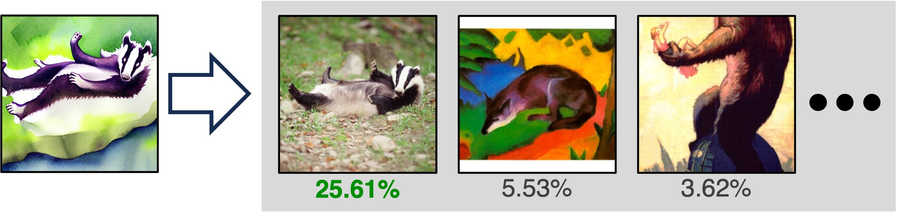
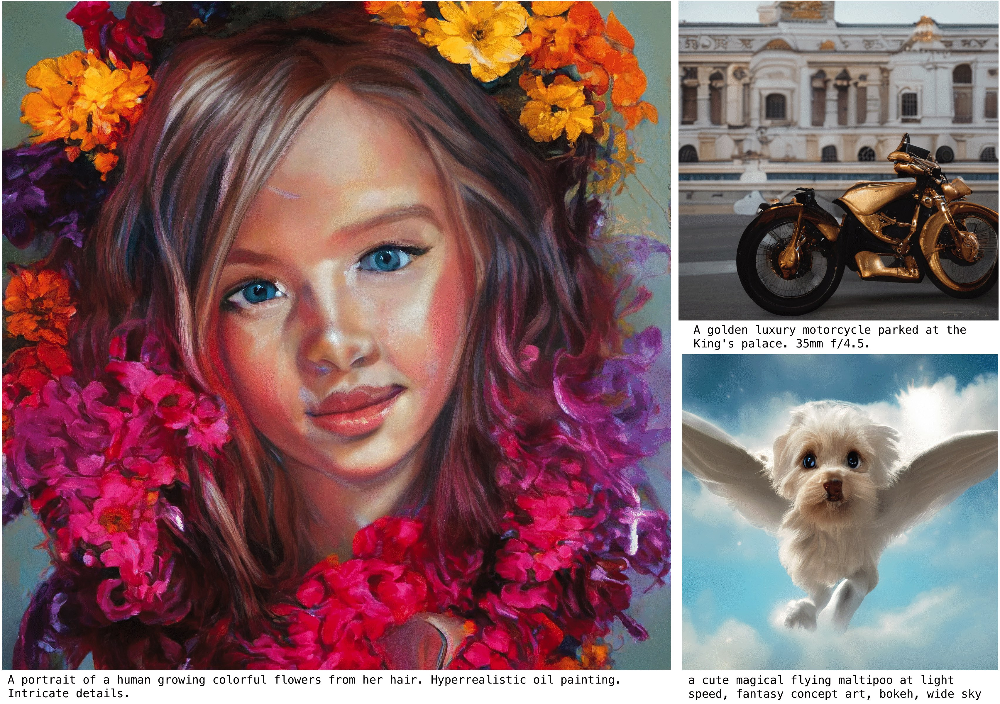
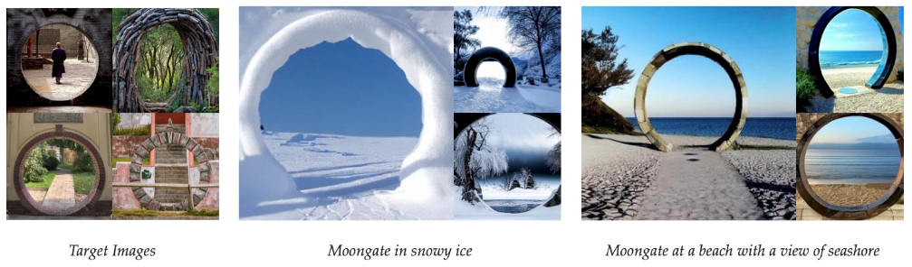

|
Richard Zhang Senior Research Scientist Adobe Research San Francisco, CA rizhang at adobe.com [GitHub] [Google Scholar] [Resume/CV] [Twitter] [Bio] |
My research interests are in computer vision, machine learning, deep learning, graphics, and image processing. I obtained a PhD at UC Berkeley, advised by Prof. Alexei (Alyosha) Efros. I obtained BS and MEng degrees from Cornell University in ECE. I often collaborate with academic researchers, either through internships or university collaboration.
Recent media.
I was included on MIT Technology Review's list of Innovators Under 35. Please see this Adobe blog post, overview video (5 min), or TWiML podcast below (40 min) for more on our work on perception, generation, and forensics for "GenAI".
News
[Sept 2024] Attribution by Unlearning and DMDv2 were accepted to NeurIPS 2024.[Aug 2024] Check out TurboEdit, accepted to ECCV 2024.
[Jul 2024] Diffusion2GAN, Lazy Diffusion, and Editable Image Elements were accepted to ECCV 2024.
[Apr 2024] I'll be speaking at GenAI Media Challenge and Fair, Data-Efficient, and Trusted Computer Vision workshops.
[Feb 2024] DMD was accepted to CVPR 2024.
[Sept 2023] DreamSim was accepted to NeurIPS 2023 as a spotlight.
Publications
|
From Slow Bidirectional to Fast Causal Video Generators Tianwei Yin, Qiang Zhang, Richard Zhang, William T. Freeman, Fredo Durand, Eli Shechtman, Xun Huang In ArXiv, 2024. [Paper] [Webpage] |
|

|
Data Attribution for Text-to-Image Models by Unlearning Synthesized Images Sheng-Yu Wang, Aaron Hertzmann, Alexei A. Efros, Jun-Yan Zhu, Richard Zhang In NeurIPS, 2024. [Paper] [Webpage] |

|
Improved Distribution Matching Distillation for Fast Image Synthesis Tianwei Yin, Michael Gharbi, Taesung Park, Richard Zhang, Eli Shechtman, Fredo Durand, William T. Freeman In NeurIPS (oral), 2024. [Paper] [Webpage] [Bibtex] |
|
Customizing Text-to-Image Diffusion with Camera Viewpoint Control Nupur Kumari, Grace Su, Richard Zhang, Taesung Park, Eli Shechtman, Jun-Yan Zhu In SIGGRAPH Asia, 2024. [Paper] [Webpage] [GitHub] [Demo] |
|
|
NewMove: Customizing text-to-video models with novel motions Joanna Materzynska, Josef Sivic, Eli Shechtman, Antonio Torralba, Richard Zhang, Bryan Russell In ACCV, 2024. [Paper] [Webpage] [Bibtex] |
|


|
TurboEdit: Instant text-based image editing Zongze Wu, Nicholas Kolkin, Jonathan Brandt, Richard Zhang, Eli Shechtman In ECCV, 2024. [Paper] [Webpage] |

|
Diffusion2GAN: Distilling Diffusion Models into Conditional GANs Minguk Kang, Richard Zhang, Connelly Barnes, Sylvain Paris, Suha Kwak, Jaesik Park, Eli Shechtman, Jun-Yan Zhu, Taesung Park In ECCV, 2024. [Paper] [Webpage] [Bibtex] |
|
Editable Image Elements for Controllable Synthesis Jiteng Mu, Michael Gharbi, Richard Zhang, Eli Shechtman, Nuno Vasconcelos, Xiaolong Wang, Taesung Park, In ECCV, 2024. [Paper] [Webpage] |
|

|
Lazy Diffusion Transformer for Interactive Image Editing Yotam Nitzan, Zongze Wu, Richard Zhang, Eli Shechtman, Daniel Cohen-Or, Taesung Park, Michael Gharbi In ECCV, 2024. [Paper] [Webpage] |
|
Mixture of Efficient Diffusion Experts Through Automatic Interval and Sub-Network Selection Alireza Ganjdanesh, Yan Kang, Yuchen Liu, Richard Zhang, Zhe Lin, Heng Huang In ECCV, 2024. [Paper] |
|
|
What Makes for a Good Stereoscopic Image? Netanel Y. Tamir, Shir Amir, Ranel Itzhaky, Noam Atia, Shobhita Sundaram, Stephanie Fu, Ron Sokolovsky, Phillip Isola, Tali Dekel, Richard Zhang, Miriam Farber In Arxiv, 2024. [Paper] |
|

|
One-step Diffusion with Distribution Matching Distillation Tianwei Yin, Michael Gharbi, Richard Zhang, Eli Shechtman, Fredo Durand, William T. Freeman, Taesung Park In CVPR, 2024. [Paper] [Webpage] [Teaser] [Bibtex] |
|
Personalized Residuals for Concept-Driven Text-to-Image Generation Cusuh Ham, Matthew Fisher, James Hays, Nick Kolkin, Yuchen Liu, Richard Zhang, Tobias Hinz In CVPR, 2024. [Paper] [Webpage] [Bibtex] |
|

|
Image Neural Field Diffusion Models Yinbo Chen, Oliver Wang, Richard Zhang, Eli Shechtman, Xiaolong Wang, Michael Gharbi In CVPR, 2024 (highlight). [Paper] [Webpage] |

|
VideoGigaGAN: Towards Detail-rich Video Super-Resolution Yiran Xu, Taesung Park, Richard Zhang, Yang Zhou, Eli Shechtman, Feng Liu, Jia-Bin Huang, Difan Liu In ArXiv, 2024. [Paper] [Webpage] [Bibtex] |

|
Jump Cut Smoothing for Talking Heads Xiaojuan Wang, Taesung Park, Yang Zhou, Eli Shechtman, Richard Zhang In ArXiv, 2024. [Paper] [Webpage] |
|
DreamSim: Learning New Dimensions of Human Visual Similarity using Synthetic Data Stephanie Fu*, Netanel Tamir*, Shobhita Sundaram*, Lucy Chai, Richard Zhang, Tali Dekel, Phillip Isola (*equal contribution) In NeurIPS (spotlight), 2023. [Paper] [Webpage] [GitHub] [Bibtex] |
|
|  |
Evaluating Data Attribution for Text-to-Image Models Sheng-Yu Wang, Alexei A. Efros, Jun-Yan Zhu, Richard Zhang In ICCV, 2023. [Paper] [Webpage] [GitHub] [Bibtex] |
|
Ablating Concepts in Text-to-Image Diffusion Models Nupur Kumari, Bingliang Zhang, Sheng-Yu Wang, Eli Shechtman, Richard Zhang, Jun-Yan Zhu In ICCV, 2023. [Paper] [Webpage] [GitHub] [Bibtex] |
|
|
Online Detection of AI-Generated Images David C. Epstein, Ishan Jain, Oliver Wang, Richard Zhang In ICCV DFAD Workshop, 2023. [Paper] [Webpage] [Slides] [Poster] [Bibtex] |
|

|
Zero-shot Image-to-Image Translation Gaurav Parmar, Krishna Kumar Singh, Richard Zhang, Yijun Li, Jingwan Lu, Jun-Yan Zhu In SIGGRAPH, 2023. [Paper] [Webpage] [GitHub] [Demo] |
|  |
Scaling up GANs for Text-to-Image Synthesis Minguk Kang, Jun-Yan Zhu, Richard Zhang, Jaesik Park, Eli Shechtman, Sylvain Paris, Taesung Park In CVPR (highlight), 2023. [Paper] [Webpage] [Bibtex] |
|  |
Multi-Concept Customization of Text-to-Image Diffusion Nupur Kumari, Bingliang Zhang, Richard Zhang, Eli Shechtman, Jun-Yan Zhu In CVPR, 2023. [Paper] [Webpage] [GitHub] [Bibtex] |
|
Domain Expansion of Image Generators Yotam Nitzan, Michaël Gharbi, Richard Zhang, Taesung Park, Jun-Yan Zhu, Daniel Cohen-Or, Eli Shechtman In CVPR, 2023. [Paper] [Webpage] [GitHub] [Bibtex] |
|

|
The Low-Rank Simplicity Bias in Deep Networks Minyoung Huh, Hossein Mobahi, Richard Zhang, Brian Cheung, Pulkit Agrawal, Phillip Isola In TMLR, 2023. [Paper] [Webpage] [GitHub] [Bibtex] |

|
Any-resolution Training for High-resolution Image Synthesis Lucy Chai, Michaël Gharbi, Eli Shechtman, Phillip Isola, Richard Zhang In ECCV, 2022. [Paper] [Webpage] [GitHub] [Video] [Bibtex] |
|
BlobGAN: Spatially Disentangled Scene Representations Dave Epstein, Taesung Park, Richard Zhang, Eli Shechtman, Alexei A. Efros In ECCV, 2022. [Paper] [Webpage] [GitHub] [Video] [Bibtex] |
|

|
3D-FM GAN: Towards 3D-Controllable Face Manipulation Yuchen Liu, Zhixin Shu, Yijun Li, Zhe Lin, Richard Zhang, Sun-Yuan Kung In ECCV, 2022. [Paper] [Webpage] [Video] |

|
ASSET: Autoregressive Semantic Scene Editing with Transformers at High Resolutions Difan Liu, Sandesh Shetty, Tobias Hinz, Matthew Fisher, Richard Zhang, Taesung Park, Evangelos Kalogerakis In SIGGRAPH, 2022. [Paper] [Webpage] [GitHub] [Bibtex] |

|
GAN-Supervised Dense Visual Alignment William Peebles, Jun-Yan Zhu, Richard Zhang, Alexei A. Efros, Antonio Torralba, Eli Shechtman In CVPR (oral, best paper finalist), 2022. [Paper] [Webpage] [GitHub] [Video] [Bibtex] |

|
Ensembling Off-the-shelf Models for GAN Training Nupur Kumari, Richard Zhang, Eli Shechtman, Jun-Yan Zhu In CVPR (oral), 2022. [Paper] [Webpage] [GitHub] [Video] [Bibtex] |

|
Spatially-Adaptive Multilayer Selection for GAN Inversion and Editing Gaurav Parmar, Yijun Li, Jingwan Lu, Richard Zhang, Jun-Yan Zhu, Krishna Kumar Singh In CVPR, 2022. [Paper] [Webpage] [GitHub] [Bibtex] |

|
On Aliased Resizing Libraries and Surprising Subtleties in FID Calculation Gaurav Parmar, Richard Zhang, Jun-Yan Zhu In CVPR, 2022. [Paper] [Webpage] [GitHub] [Bibtex] |

|
Editing Conditional Radiance Fields Steven Liu, Xiuming Zhang, Zhoutong Zhang, Richard Zhang, Jun-Yan Zhu, Bryan Russell In ICCV, 2021. [Paper] [Webpage] [GitHub] [Video] [Demo] [Bibtex] |

|
Contrastive Feature Loss for Image Prediction Alex Andonian, Taesung Park, Bryan Russell, Phillip Isola, Jun-Yan Zhu, Richard Zhang. In ICCV AIM Workshop, 2021. [Paper] [GitHub] [Bibtex] |

|
Ensembling with Deep Generative Views Lucy Chai, Jun-Yan Zhu, Eli Shechtman, Phillip Isola, Richard Zhang In CVPR, 2021. [Paper] [Webpage] [GitHub] [Video] [Colab] [Bibtex] |

|
Few-shot Image Generation via Cross-domain Correspondence Utkarsh Ojha, Yijun Li, Jingwan Lu, Alexei A. Efros, Yong Jae Lee, Eli Shechtman, Richard Zhang In CVPR, 2021. [Paper] [Webpage] [GitHub] [Video] [Bibtex] |

|
Anycost GANs for Interactive Image Synthesis and Editing Ji Lin, Richard Zhang, Frieder Ganz, Song Han, Jun-Yan Zhu In CVPR, 2021. [Paper] [Webpage] [Video] [GitHub] [Bibtex] |

|
Spatially-Adaptive Pixelwise Networks for Fast Image Translation Tamar Rott Shaham, Michaël Gharbi, Richard Zhang, Eli Shechtman, Tomer Michaeli In CVPR, 2021. [Paper] [Webpage] [Bibtex] |

|
CDPAM: Contrastive Learning for Perceptual Audio Similarity Pranay Manocha, Zeyu Jin, Richard Zhang, Adam Finkelstein In ICASSP, 2021. [Paper] [Webpage] [GitHub] [Bibtex] |


|
Swapping Autoencoder for Deep Image Manipulation Taesung Park, Jun-Yan Zhu, Oliver Wang, Jingwan Lu, Eli Shechtman, Alexei A. Efros, Richard Zhang In NeurIPS, 2020. [Paper] [Webpage] [GitHub] [Video] [Bibtex] |

|
Few-shot Image Generation with Elastic Weight Consolidation Yijun Li, Richard Zhang, Jingwan Lu, Eli Shechtman In NeurIPS, 2020. [Paper] [Supplemental] [Webpage] [Bibtex] |

|
Contrastive Learning for Unpaired Image-to-Image Translation Taesung Park, Alexei A. Efros, Richard Zhang, Jun-Yan Zhu In ECCV, 2020. [Paper] [Webpage] [GitHub] [Teaser] [Video] [Bibtex] |

|
Transforming and Projecting Images into Class-conditional Generative Networks Minyoung Huh, Richard Zhang, Jun-Yan Zhu, Sylvain Paris, Aaron Hertzmann In ECCV (oral), 2020. [Paper] [Webpage] [GitHub] [Bibtex] |

|
A Differentiable Perceptual Audio Metric Learned from Just Noticeable Differences Pranay Manocha, Adam Finkelstein, Richard Zhang, Nicholas J. Bryan, Gautham J. Mysore, Zeyu Jin In Interspeech, 2020. [Paper] [Webpage] [GitHub] [Bibtex] |

|
CNN-generated images are surprisingly easy to spot...for now Sheng-Yu Wang, Oliver Wang, Richard Zhang, Andrew Owens, Alexei A. Efros In CVPR, 2020 (oral). [Paper] [Webpage] [GitHub] [Talk] [Bibtex] |

|
Deep Parametric Shape Predictions using Distance Fields Dmitriy Smirnov, Matthew Fisher, Vladimir G. Kim, Richard Zhang, Justin Solomon In CVPR, 2020. [Paper] [Webpage] [GitHub] [Video] [Bibtex] |
|
Image Morphing with Perceptual Constraints and STN Alignment Noa Fish, Richard Zhang, Lilach Perry, Daniel Cohen-Or, Eli Shechtman, Connelly Barnes In CGF, 2020. [Paper] [GitHub] [Bibtex] |
|


|
Making Convolutional Networks Shift-Invariant Again Richard Zhang In ICML, 2019. [Paper] [Webpage] [GitHub] [Talk] [Slides (129mb)] [Poster] [Bibtex] |

|
Detecting Photoshopped Faces by Scripting Photoshop Sheng-Yu Wang, Oliver Wang, Andrew Owens, Richard Zhang, Alexei A. Efros In ICCV, 2019. [Paper] [Webpage] [GitHub] [Video] [Poster] [Adobe Max] [Adobe Blog] [Bibtex] |


|
Interactive Sketch & Fill: Multiclass Sketch-to-Image Translation Arnab Ghosh, Richard Zhang, Puneet Dokania, Oliver Wang, Alexei A. Efros, Philip H.S. Torr, Eli Shechtman In ICCV, 2019. [Paper] [Webpage] [GitHub] [Video] [Bibtex] |

|
The Unreasonable Effectiveness of Deep Features as a Perceptual Metric Richard Zhang, Phillip Isola, Alexei A. Efros, Eli Shechtman, Oliver Wang In CVPR, 2018. [Paper] [Webpage] [GitHub] [Poster] [Adobe Blog] [Two Min Papers] [Bibtex] |

|
Stochastic Adversarial Video Prediction Alex X. Lee, Richard Zhang, Frederik Ebert, Pieter Abbeel, Chelsea Finn, Sergey Levine In ArXiv, 2018. [Paper] [Webpage] [GitHub] [Bibtex] |

|
Toward Multimodal Image-to-Image Translation Jun-Yan Zhu, Richard Zhang, Deepak Pathak, Trevor Darrell, Alexei A. Efros, Oliver Wang, Eli Shechtman In NIPS, 2017. [Paper] [Webpage] [GitHub] [Video (YouTube)(mp4)] [Poster] [Two Min Papers] [Bibtex] |

|
Real-Time User-Guided Image Colorization with Learned Deep Priors Richard Zhang*, Jun-Yan Zhu*, Phillip Isola, Xinyang Geng, Angela S. Lin, Tianhe Yu, Alexei A. Efros (*equal contribution) In SIGGRAPH, 2017. [Paper] [Webpage] [Fastforward] [Talk] [Video (YouTube)(mp4)] [PSE 2020] [GitHub] [Slides (141mb)] [Bibtex] |

|
Split-Brain Autoencoders: Unsupervised Learning by Cross-Channel Prediction Richard Zhang, Phillip Isola, Alexei A. Efros In CVPR, 2017. [Paper] [Webpage] [GitHub] [Poster] [Seminar Talk] [Bibtex] |

|
Colorful Image Colorization Richard Zhang, Phillip Isola, Alexei A. Efros In ECCV, 2016 (oral). [Paper] [Webpage] [GitHub] [Talk] [Slides (138mb)] [Poster] [Bibtex] |

|
Sensor Fusion for Semantic Segmentation of Urban Scenes Richard Zhang, Stefan Candra, Kai Vetter, Avideh Zakhor In ICRA, 2015. [Paper (pdf)(official)] [Slides] [Poster] [Talk] [Annotations (tar)(zip) ] [Bibtex] |

|
Automatic Identification of Window Regions on Indoor Point Clouds Using LiDAR and Cameras Richard Zhang, Avideh Zakhor In WACV, 2014. [Paper (pdf)(official)] [Bibtex] |


Thesis
|
|
Image Synthesis for Self-Supervised Visual Representation Learning Richard Zhang Spring 2018. [Thesis] [Dissertation Talk] [Fast Forward] [Slides (396 MB)] [Bibtex] |
Organization, Committees
CVPR 2020, 2021, 2023, 2024, 2025 (Area Chair)ECCV 2024 (Area Chair)
BMVC 2022 (Area Chair)
Sketching for Human Expressivity (SHE) at ECCV 2022 (co-organizer)
Advances in Image Manipulation (AIM) at ICCV 2019 (co-organizer)
Awards
MIT Technology Review, 35 Innovators Under 35, 2023Reviewer recognitions, CVPR 2019, NeurIPS 2019, ECCV 2020, NeurIPS 2020, ECCV 2022
Thesis Fast Forward, Best Presentation, SIGGRAPH 2018
Adobe Research Fellowship 2017
Student collaborators/interns
I have gotten to work with some wonderful collaborators.@Adobe
- PhD/MS [interns] Grace Su, CMU
- Masters/Undergrad [interns] Steven Liu, MIT
- PhD/MS [university collaborators] Stephanie Fu, MIT
Chun-Hsiao (Daniel) Yeh, Berkeley
Konpat Preechakul, Berkeley
Po Ryan, Stanford
Rohit Gandikota, CMU
Tianwei Yin, MIT
Joanna Materzynska, MIT
Yiran Xu, UMaryland
Alireza Ganjdanesh, UMaryland
Jiteng Mu, UC San Diego
Sheng-Yu Wang, CMU
Xiaojuan Wang, UWashington
Yossi Gandelsman, UC Berkeley
Yinbo Chen, UC San Diego
Nupur Kumari, CMU
Minguk Kang, POSTTECH<
Dave Epstein, UC Berkeley
Gaurav Parmar, CMU
Yotam Nitzan, Tel Aviv University
Roy Or-El, UW
Lucy Chai, MIT (Fellowship winner, 2021)
Yuchen Liu, Princeton
Difan Liu, UMass Amherst
Taesung Park, UC Berkeley (Fellowship winner, 2020)
Ji Lin, MIT
William (Bill) Peebles, UC Berkeley
Alex Andonian, MIT
Utkarsh Ojha, UC Davis
Arnab Ghosh, Oxford
Minyoung (Jacob) Huh, MIT
Tamar Rott Shaham, Technion (Fellowship winner, 2020)
Peiye Zhuang, UIUC
Dima Smirnov, MIT
Noa Fish, Tel Aviv
Seungjoo Yoo, Korea Univ (WIT scholarship winner, 2019)
Shobhita Sundaram, MIT
Netanel Y. Tamir, Weizmann
Pranay Manocha, Princeton
Rawan Alghofaili, George Mason
Alvin Wan, UC Berkeley
- Undergraduates Xin Qin, next @ USC
Hemang Jangle
Angela S. Lin, next @ UT Austin
Xinyang Geng, next @ UC Berkeley
Tianhe Yu, next @ Stanford
Stefan A. Candra
Teaching
Introduction to Artificial Intelligence (CS 188), UC BerkeleyGraduate Student Instructor (GSI) with Prof. Anca Dragan
Spring 2017
Computer Vision (CS 280), UC Berkeley
Graduate Student Instructor (GSI) with Prof. Alexei A. Efros, Prof. Trevor Darrell
Spring 2016
Introduction to Circuits (ECE 2100), Cornell University
Teaching Assistant (TA) with Prof. Alyosha Molnar
Spring 2010